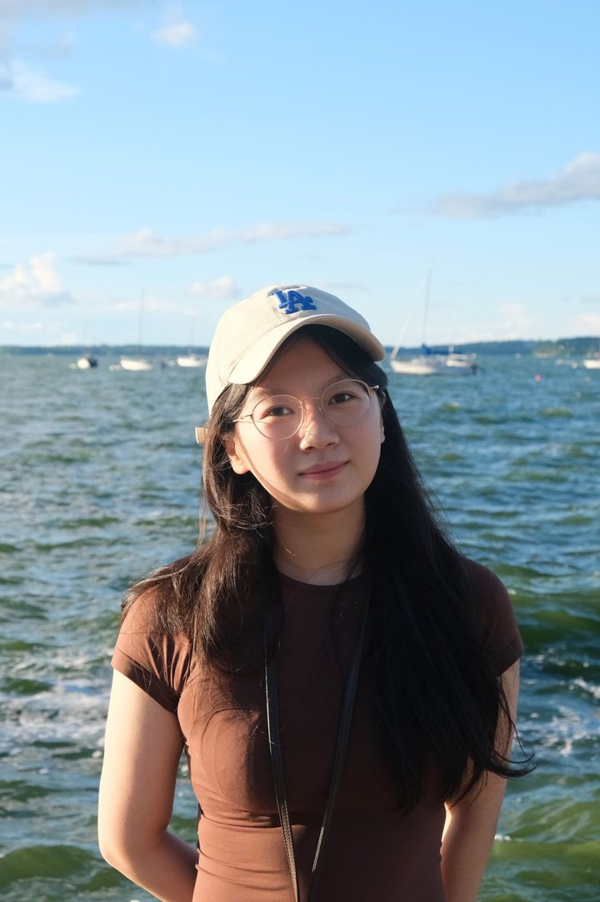

PhD student · Boston University
Yuqi Tu
About

I am a PhD student in the Faculty of Computing & Data Sciences (CDS) at Boston University, advised by Xuezhou Zhang. I work on reinforcement learning and natural language processing.
I received my bachelor's degree in Mathematics (Honors) and Computer Sciences from UW–Madison, where I was mentored by Prof. Benedek Valko, Prof. Ilias Diakonikolas and Prof. Joshua Cape. Before Madison, I studied for two years at Shanghai University of Finance and Economics.
Research
-
Reinforcement learning
Sequential decision-making, from bandit theory to deep RL.
-
Representation learning
What a learned representation encodes, and how to measure it.
-
Language models
Decision-making and reasoning in NLP systems.